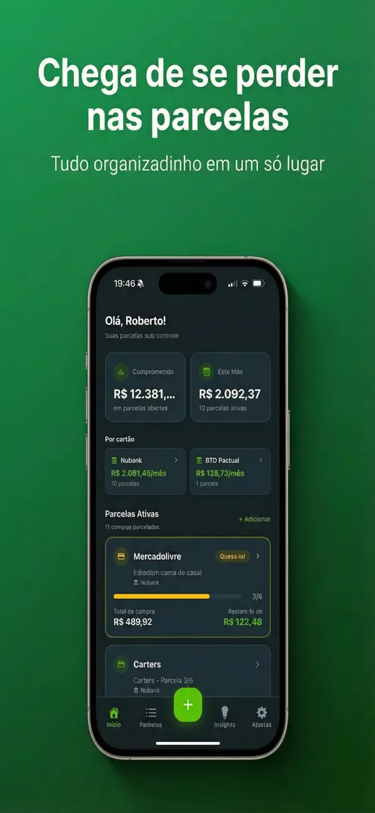
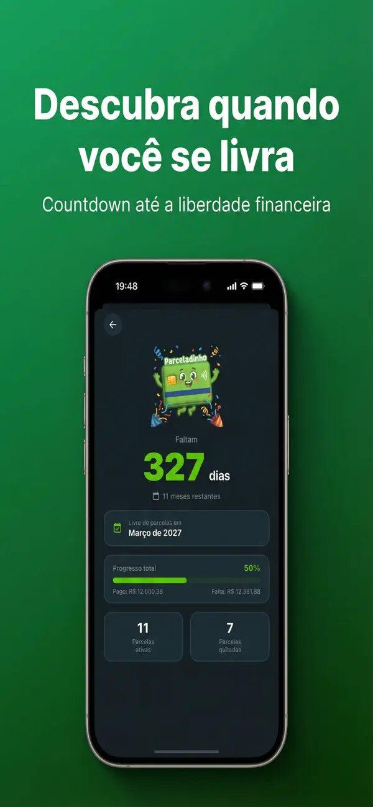

O que um app de controle de parcelas precisa fazer
Antes de eleger o melhor app para controlar parcelas, vale definir o critério. Quem parcela em mais de um cartão costuma travar sempre na mesma pergunta: "quanto do meu salário já está comprometido nos próximos meses?". Um bom aplicativo para controlar compras parceladas precisa responder isso em segundos, e para isso deve:
- Somar o total comprometido em todas as parcelas abertas, não só a fatura do mês;
- Mostrar quanto vai pesar no próximo mês e nos seguintes, mês a mês;
- Avisar quando cada compra termina — é isso que libera espaço no orçamento;
- Juntar todos os cartões (Nubank, Inter, C6…) em uma visão só;
- Exigir o mínimo de digitação, senão você abandona na segunda fatura.
Com essa régua, dá para avaliar as quatro opções que o brasileiro realmente usa: apps de finanças gerais, planilhas, o app do próprio banco e um app dedicado a parcelas.
Apps de finanças gerais (Mobills, Organizze): onde ficam devendo
Mobills e Organizze são bons apps — e é justo dizer isso. Eles brilham no orçamento completo: categorias de gastos, metas, relatórios, contas a pagar.
Nas parcelas, porém, o trabalho é seu. No Mobills, você cadastra a despesa parcelada manualmente e o app distribui cada parcela nas faturas futuras (1/12, 2/12…); a importação automática via Open Finance existe, mas fica nos planos pagos e exige autorizar o compartilhamento dos seus dados bancários. No Organizze, você lança o valor total da compra e informa em quantas vezes parcelou — compra a compra — e, depois do teste de 7 dias, o uso é por assinatura.
O ponto cego é outro: como são apps de orçamento, a parcela vira só mais um lançamento entre dezenas de categorias. Perguntas como "quando termina cada compra?" ou "em que mês fico livre das parcelas?" não têm uma tela dedicada — você precisa deduzir fatura a fatura.
Planilhas de parcelas: baratas, mas 100% manuais
A planilha é a solução de custo zero e máxima flexibilidade: uma linha por compra, colunas para loja, valor, parcela atual e total, e fórmulas que somam o comprometido por mês. Montamos um modelo pronto no guia da planilha de controle de parcelas, se você prefere esse caminho.
As limitações são conhecidas: toda fatura nova exige digitar as compras à mão, atualizar o número da parcela de cada linha e conferir se nada ficou de fora. Não há alerta quando uma parcela está acabando, e um erro de fórmula passa despercebido por meses. Funciona para quem tem poucas parcelas e disciplina de atualizar todo mês.
Apps do próprio banco: só mostram um cartão por vez
Todo app de banco mostra as compras parceladas do próprio cartão. No Nubank, por exemplo, ao abrir a fatura atual na área do cartão de crédito, cada compra parcelada aparece com o número da parcela, algo como "Magalu — 3/10". Itaú, Inter e C6 seguem lógica parecida: na área do cartão, abra a fatura aberta ou atual e procure as compras com indicação de parcela. Explicamos os caminhos no guia de como ver compras parceladas no cartão e no passo a passo específico do Nubank.
O problema não é ver a parcela — é consolidar. Quem usa dois ou três cartões precisa abrir dois ou três apps, somar de cabeça e ainda estimar quando cada compra termina. Nenhum app de banco soma as parcelas do concorrente, e a projeção dos próximos meses, quando existe, vale só para aquele cartão.
Parceladinho: foto da fatura, IA e todos os cartões juntos
O Parceladinho ataca exatamente essa lacuna. Em vez de digitar ou conectar conta bancária, você tira uma foto da fatura (ou envia a imagem da galeria, ou o PDF) e a IA identifica cada compra parcelada: loja, valor, parcela atual e total. Envie a fatura de cada cartão e tudo — Nubank, Inter, C6 — aparece junto no mesmo dashboard.

A tela principal mostra o total comprometido em parcelas abertas, quanto você vai pagar no próximo mês e as parcelas por cartão, com barra de progresso por compra e alerta quando uma parcela está acabando. Na área de insights, um gráfico projeta os próximos meses (toque no mês para ver o que vence), além do resumo "livre de parcelas em [mês/ano]", da maior compra parcelada e da média por parcela. Dá para filtrar por cartão, status ou loja, adicionar parcela manual, editar valores e datas e arrastar para remover. Um lembrete mensal avisa a hora de enviar a fatura nova.
Dois pontos de honestidade: o Parceladinho é só para iPhone (iOS 15.1+) e não faz orçamento por categorias — ele é um app para controlar parcelas, e nada além disso. Em troca, não pede Open Finance nem senha de banco: os dados ficam apenas no seu dispositivo.
Deixe a IA organizar suas parcelas
Tire uma foto da fatura e o Parceladinho mostra quanto falta pagar, parcela por parcela. Teste grátis por 3 dias.
Comparativo: qual o melhor app para controlar parcelas?
O comparativo abaixo resume como cada opção se sai nos critérios que definimos no início:
| Critério | Mobills / Organizze | Planilha | App do banco | Parceladinho |
|---|---|---|---|---|
| Como as parcelas entram | Digitação manual (ou Open Finance nos planos pagos) | Digitação manual | Automático, só do próprio cartão | Foto, imagem ou PDF da fatura — a IA extrai |
| Todos os cartões juntos | Sim, se cadastrar todos | Sim, se digitar tudo | Não — um app por banco | Sim, no mesmo dashboard |
| Mostra quando cada compra termina | Dá para deduzir, fatura a fatura | Depende das suas fórmulas | Em geral, só o número da parcela (3/10) | Sim: barra de progresso, alerta e "livre de parcelas em…" |
| Projeção dos próximos meses | Parcial, por cartão cadastrado | Manual | Limitada ao próprio cartão | Gráfico mês a mês, com toque para detalhar |
| Precisa conectar o banco | Só nos planos com Open Finance | Não | É o próprio banco | Não — sem Open Finance, sem senha |
| Orçamento por categorias | Sim (ponto forte) | Se você montar | Não | Não — foco total em parcelas |
| Preço | Grátis com limites (Mobills) ou assinatura | Grátis | Grátis | Assinatura Pro com 3 dias grátis (valores no app) |
| Plataforma | iOS, Android e web | Qualquer dispositivo | iOS e Android | iPhone (iOS 15.1+) |
Qual escolher para cada perfil
- Você quer orçamento completo, com categorias e metas: Mobills ou Organizze. São os melhores nisso — só aceite que as parcelas exigirão cadastro manual ou conexão bancária.
- Você não quer gastar nada e tem poucas parcelas: planilha. Baixe um modelo pronto e reserve dez minutos por fatura para atualizar.
- Você só tem um cartão: o app do próprio banco resolve — a fatura já mostra o número de cada parcela.
- Você tem dois ou mais cartões e quer a resposta pronta: um app dedicado. O Parceladinho lê a fatura com IA, junta tudo e diz quanto está comprometido, quanto vence no próximo mês e quando você fica livre.

💡 Dica: antes de escolher a ferramenta, faça o diagnóstico: o guia de como ver compras parceladas no cartão mostra onde encontrar cada parcela no app do seu banco.
Para orçamento geral, os apps de finanças seguem imbatíveis. Mas se a sua dor é especificamente o parcelado — saber o total, o próximo mês e a data de liberdade —, a ferramenta certa é dedicada. Conheça o Parceladinho e teste grátis por 3 dias.
Perguntas frequentes sobre apps de controle de parcelas
O Parceladinho tem versão Android?
Não. Hoje o Parceladinho está disponível apenas para iPhone (iOS 15.1 ou superior), na App Store brasileira. Se você usa Android, as alternativas deste guia — planilha, app do banco ou apps de finanças gerais — continuam valendo.
Preciso conectar minha conta do banco para usar o Parceladinho?
Não. O Parceladinho não usa Open Finance e não pede senha de banco. Você envia uma foto, imagem da galeria ou PDF da fatura, e a IA identifica as compras parceladas. Os dados ficam apenas no seu dispositivo.
Quanto custa o Parceladinho?
A assinatura Parceladinho Pro tem 3 dias de teste grátis, e os planos e valores atuais aparecem direto no app. O cancelamento é feito direto na App Store.
Posso usar o Parceladinho junto com Mobills ou Organizze?
Pode, e faz sentido: Mobills e Organizze cuidam do orçamento geral por categorias, enquanto o Parceladinho responde rápido quanto você ainda deve em parcelas, quanto vence no próximo mês e quando cada compra termina. Um não substitui o outro.